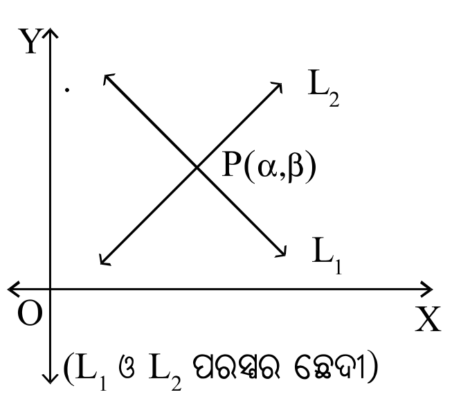
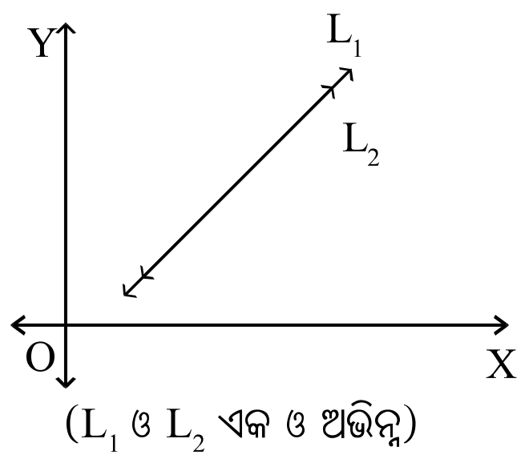
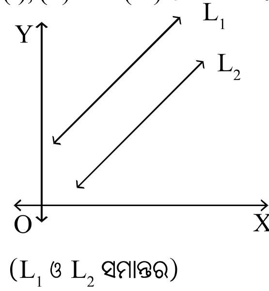
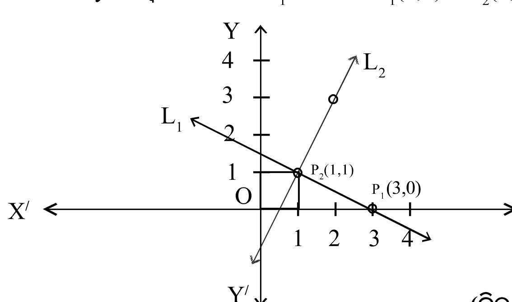
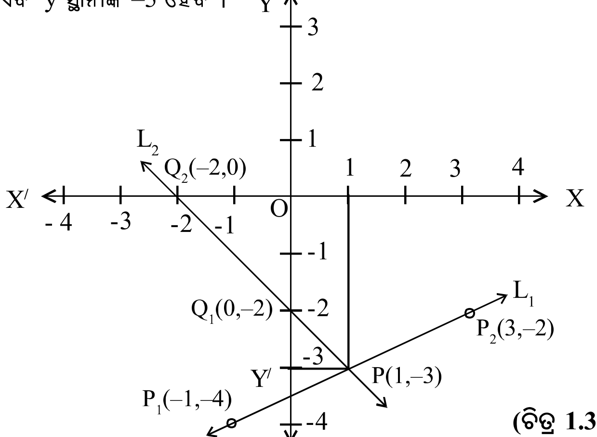
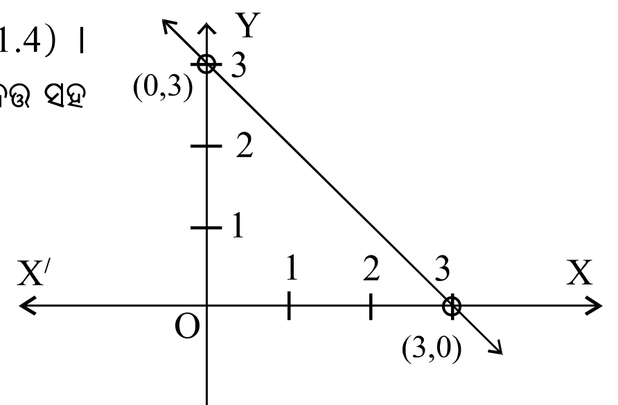
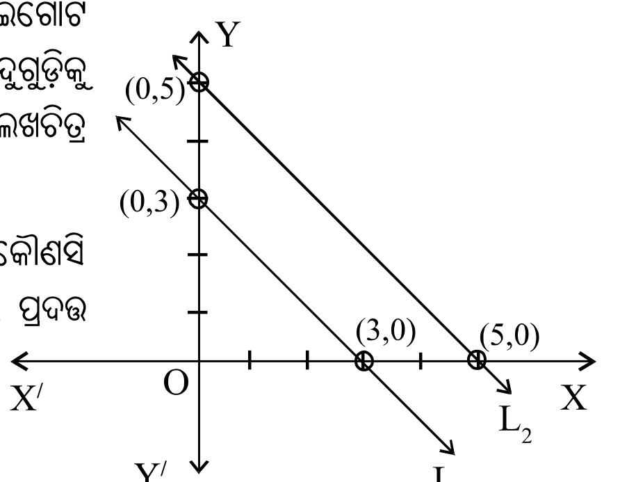
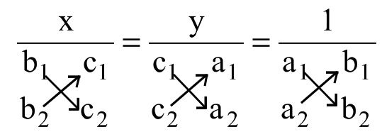
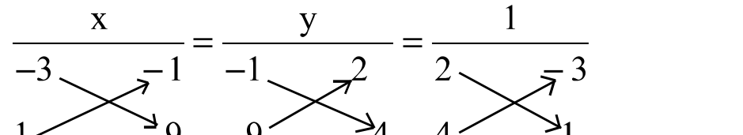
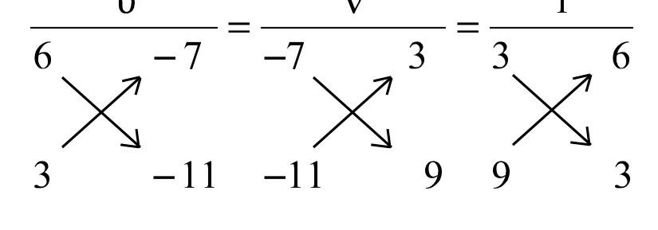

ପ୍ରଥମ ଅଧ୍ୟାୟ
ସରଳ ସହସମୀକରଣ
Linear Simultaneous Equations
1.1ଉପକ୍ରମଣିକାIntroduction
ଗୋଟିଏ ଅଜ୍ଞାତ ରାଶି x ରେ ସରଳ ସମୀକରଣର ସାଧାରଣ ରୂପ ହେଉଛି $ax + b = 0$, ଯେଉଁଠାରେ $a \neq 0$ । ଏଠାରେ a ଓ b ବାସ୍ତବ ସଂଖ୍ୟା ଓ a କୁ x ର ସହଗ (coefficient ) ଓ b କୁ ଧ୍ରୁବକ ରାଶି କୁହାଯାଏ । ଏଠାରେ ସମୀକରଣଟିର ସମାଧାନ (ମୂଳ) $-\frac{b}{a}$ ବୋଲି ଅମେ ଜାଣିଛେ । ଦୁଇଟି ଅଜ୍ଞାତ ରାଶିରେ ଗୋଟିଏ ସରଳ ସମୀକରଣ (ଏକଘାତୀ)ର ସାଧାରଣ ରୂପ $a_1x + b_1y + c_1 = 0$ ...............(1)
ଯେଉଁଠାରେ $a_1$ ଓ $b_1$ ଯଥାକ୍ରମେ x ଓ y ର ସହଗ ଓ $c_1$ ଧ୍ରୁବକ ରାଶି ଏବଂ $a_1$, $b_1$ ଓ $c_1$ ବାସ୍ତବ ସଂଖ୍ୟା ଅଟନ୍ତି । ଏଠାରେ $a_1$ ଓ $b_1$ ସହଗଦ୍ୱୟ ଉଭୟ ଶୂନ ନୁହନ୍ତି ।
ସମୀକରଣ (1) ର ଜ୍ୟାମିତିକ ରୂପ xy ସମତଳ (ସ୍ଥାନାଙ୍କ ସମତଳରେ) ଗୋଟିଏ ସରଳରେଖା । ଏହି ବିଷୟଟିର ଆଲୋଚନା ପୂର୍ବ ଶ୍ରେଣୀର ବୀଜଗଣିତ ପୁସ୍ତକ ରେ ଅନୁଚ୍ଛେଦ 5.3 ରେ କରାଯାଇଛି । x ଓ y ରେ ଏକଘାତୀ ସମୀକରଣ (1) ର ଲେଖଚିତ୍ର ଗୋଟିଏ ସରଳରେଖା ଓ ଏହାର ଆଲୋଚନା ଉକ୍ତ ଅଧ୍ୟାୟ ପାଇଁ ନିତାନ୍ତ ଆବଶ୍ୟକ ।
x ଓ y ଅଜ୍ଞାତ ରାଶି ବିଶିଷ୍ଟ ଏକଘାତୀ ସମୀକରଣ (1)ର ସମାଧାନ ପାଇଁ ଆମକୁ ସମୀକରଣ (1) ବ୍ୟତୀତ ଆଉ ଗୋଟିଏ ସମୀକରଣର ଆବଶ୍ୟକତା ପଡ଼ିଥାଏ । ଯଥା –
ଯେଉଁଠାରେ $a_2$ , $b_2$ ଓ $c_2$ ବାସ୍ତବ ସଂଖ୍ୟା ଅଟନ୍ତି । ଏଠାରେ x ଓ y ସହଗ $a_2$, $b_2$ ଦ୍ୱୟ ଏକ ସଙ୍ଗେ ଶୂନ ନୁହନ୍ତି । $c_2$ ଏକ ଧ୍ରୁବକ ରାଶି ।
ଦୈନନ୍ଦିନ ଜୀବନ ସହ ଜଡ଼ିତ କେତେକ ପରିସ୍ଥିତିର ସମାଧାନରେ ଉକ୍ତ ଏକଘାତୀ ସହ–ସମୀକରଣର ଆବଶ୍ୟକତା ରହିଛି । କେତେକ ପାଟୀଗାଣିତିକ ପ୍ରଶ୍ନର ସମାଧାନରେ ଏହାର ପ୍ରୟୋଗ ସମ୍ପର୍କରେ ଏହି ଅଧ୍ୟାୟର ଶେଷ ଭାଗରେ ଆଲୋଚନା କରାଯାଇଛି ।
1.2ସହ-ସମୀକରଣଦ୍ୱୟର ଜ୍ୟାମିତିକ ପରିପ୍ରକାଶGeometrical Representation
ମନେକର ଦତ୍ତ ଏକ ଘାତୀ ସହ ସମୀକରଣ ଦ୍ୱୟ $a_1x + b_1y + c_1 = 0$ ......(1)
ଯେଉଁଠାରେ $a_1^2 + b_1^2 \neq 0$ ଏବଂ $a_2^2 + b_2^2 \neq 0$ ଅର୍ଥାତ୍ $a_1, b_1$ ଏବଂ $a_2, b_2$ ଏକ ସଙ୍ଗେ 0 ସହ ସମାନ ନୁହଁନ୍ତି ।
ମନେକର ସମୀକରଣ (1) ଓ (2) ର ଲେଖଚିତ୍ର (ଯେଉଁ ଗୁଡ଼ିକ xy- ସମତଳ ରେ ଗୋଟିଏ ଗୋଟିଏ ସରଳରେଖା) ଯଥାକ୍ରମେ $L_1$ ଓ $L_2$ ଭାବେ ନାମିତ । ଏହାକୁ ସଂକ୍ଷେପରେ ଲେଖିବା −
ଅନୁଧ୍ୟାନ କଲେ ଆମେ ଦେଖିପାରିବା ଯେ, ଏହି ସରଳରେଖା ଦ୍ୱୟ xy- ସମତଳରେ (ମନେକର ପ୍ରଥମ ବୃତ୍ତପାଦରେ) ତିନି ପ୍ରକାରରେ ଅବସ୍ଥିତ ହୋଇ ପାରିବେ ଓ ଏହା ନିମ୍ନରେ ଚିତ୍ର 1.1 (i), (ii) ଏବଂ (iii) ରେ ଦର୍ଶିତ ।



ଚିତ୍ର 1.1 (i) : $L_1$ ଓ $L_2$ ସରଳରେଖା ଦ୍ୱୟ ପରସ୍ପର ଛେଦୀ, ସେମାନଙ୍କର କେବଳ ଗୋଟିଏ ଛେଦବିନ୍ଦୁ P ଓ ଏହି ବିନ୍ଦୁଟି ଉଭୟ $L_1$ ଓ $L_2$ ଉପରେ ଅବସ୍ଥିତ । ଏହାର ସ୍ଥାନାଙ୍କ $(\alpha,\beta)$ ଅର୍ଥାତ୍ $x = \alpha$ ଓ $y = \beta$ ଦ୍ୱାରା ଉଭୟ ସମୀକରଣ (1) ଓ (2) ସିଦ୍ଧ ହୁଅନ୍ତି ।
ଅତଏବ ସମୀକରଣ (1) ଓ (2) ର କେବଳ ଗୋଟିଏ (ଅନନ୍ୟ) ସମାଧାନ ରହିବ; ଯଦି ଓ କେବଳ ଯଦି ସମୀକରଣ ଦ୍ୱୟ ଦ୍ୱାରା ସୂଚିତ ସରଳରେଖା ଦ୍ୱୟ ପରସ୍ପର ଛେଦୀ ହେବେ ।
ଚିତ୍ର 1.1(ii) : ଏଠାରେ $L_1$ ଓ $L_2$ ସରଳରେଖା ଦ୍ୱୟ ଏକ ଓ ଅଭିନ୍ନ (Coincident) ଅର୍ଥାତ୍ ଏକ ଏବଂ ଅଭିନ୍ନ ଅଟନ୍ତି । ତେଣୁ ସେମାନଙ୍କର ସାଧାରଣ ବିନ୍ଦୁ ଅସଂଖ୍ୟ । ଅତଏବ ଏ କ୍ଷେତ୍ରରେ ସମୀକରଣ ଦ୍ୱୟର ଅସଂଖ୍ୟ ସମାଧାନ ସମ୍ଭବ ।
ଚିତ୍ର 1.1 (iii) : ଏ କ୍ଷେତ୍ରରେ $L_1$ ଓ $L_2$ ସରଳରେଖା ଦ୍ୱୟ ପରସ୍ପର ସହ ସମାନ୍ତର । ଅର୍ଥାତ୍ ସରଳରେଖାଦ୍ୱୟ ପରସ୍ପର ଛେଦୀ ହେବେ ନାହିଁ ।
ସହ ସମୀକରଣଦ୍ୱୟ ଦ୍ୱାରା ସୂଚିତ ସରଳ ରେଖା ଦୁଇଟି ସମାନ୍ତର ହେଲେ, ସହ ସମୀକରଣ ଦ୍ୱୟର ସମାଧାନ ସମ୍ଭବ ନୁହେଁ ।
1.3ଲେଖଚିତ୍ର ଦ୍ୱାରା ସହସମୀକରଣଦ୍ୱୟର ସମାଧାନSolution of simultaneous equations by use of Graphs
ପୂର୍ବ ଶ୍ରେଣୀରେ ଗୋଟିଏ ସରଳସମୀକରଣର ଲେଖଚିତ୍ର କିପରି ଅଙ୍କନ କରାଯାଏ ସେ ବିଷୟରେ ଆଲୋଚନା କରାଯାଇଛି । ଲେଖଚିତ୍ର ସାହାଯ୍ୟରେ ଦୁଇଟି ଏକଘାତୀ ସହ ସମୀକରଣର ସମାଧାନ କିପରି କରାଯାଏ ସେ ସମ୍ପର୍କରେ ଆମର ଆଲୋଚନା ନିମ୍ନରେ ଉଦାହରଣମାନଙ୍କ ମାଧ୍ୟମରେ କରିବା ।
ଉଦାହରଣ – 1 : ଲେଖଚିତ୍ର ଅଙ୍କନ କରି ନିମ୍ନଲିଖିତ ସହ ସମୀକରଣ ଦ୍ୱୟର ସମାଧାନ କର ।
ସମାଧାନ : ସମୀକରଣ ଦ୍ୱୟରୁ y କୁ x ରୂପରେ (ଅଥବା x କୁ y ରୂପରେ) ପ୍ରକାଶ କଲେ,
ସମୀକରଣ (i) ରେ x ର ମାନ 3 ଓ 1 ପାଇଁ y ର ଆନୁଷଙ୍ଗିକ ମାନ ନିମ୍ନ ଟେବୁଲରେ ଦିଆଯାଇଛି ।
| x | 3 | 1 |
| y | 0 | 1 |
∴ $P_1$ ଓ $P_2$ ବିନ୍ଦୁ ଦ୍ୱୟର ସ୍ଥାନାଙ୍କ ଯଥାକ୍ରମେ (3,0) ଓ (1,1) ଅଟେ ।
ସେହିପରି ସମୀକରଣ (ii) ରେ x ର ମାନ 1 ଓ 2 ପାଇଁ y ର ଆନୁଷଙ୍ଗିକ ମାନ ନିମ୍ନ ଟେବୁଲରେ ଦିଆଯାଇଛି ।
| x | 1 | 2 |
| y | 1 | 3 |
∴ $Q_1$ ଓ $Q_2$ ର ସ୍ଥାନାଙ୍କ ଯଥାକ୍ରମେ (1,1) ଓ (2,3) ଅଟେ ।
ଲେଖ କାଗଜରେ x ଓ y ଅକ୍ଷଦ୍ୱୟ ଅଙ୍କନ କରି $L_1$ ରେଖାପାଇଁ $P_1(3,0)$ ଓ $P_2(1,1)$ ବିନ୍ଦୁଦ୍ୱୟକୁ xy ସମତଳରେ

ସ୍ଥାପନ କର ଏବଂ $L_2$ ରେଖା ପାଇଁ $Q_1(1, 1)$ ଓ $Q_2(2, 3)$ ବିନ୍ଦୁଦ୍ୱୟକୁ xy ସମତଳରେ ସ୍ଥାପନ କର । ଏହାପରେ $\overleftrightarrow{P_1P_2}(L_1)$ ଓ $\overleftrightarrow{Q_1Q_2}(L_2)$ ରେଖାଦ୍ୱୟ ଅଙ୍କନ କରି ସେମାନଙ୍କର ଛେଦବିନ୍ଦୁ P ଚିହ୍ନଟ କର, ଯାହାର x- ସ୍ଥାନାଙ୍କ 1 ଏବଂ y- ସ୍ଥାନାଙ୍କ 1 ହେବ । ∴ ନିର୍ଣ୍ଣେୟ ସମାଧାନଟି (1, 1) ।
ଉଦାହରଣ - 2 : ଲେଖ ଚିତ୍ର ଅଙ୍କନ କରି ସମାଧାନ କର : $x - 2y - 7 = 0$; $x + y + 2 = 0$
ସମାଧାନ : ଦତ୍ତ ସହସମୀକରଣଦ୍ୱୟ ରୁ y ର x ରୂପ
(i) ରେ x ର ଦୁଇଗୋଟି ମାନ ପାଇଁ y ର ଆନୁସଙ୍ଗିକ ମାନ ସ୍ଥିର କରି ଦୁଇଟି ବିନ୍ଦୁ ପାଇଁ କ୍ରମିତ ଯୋଡ଼ି ସ୍ଥିର କରିପାରିବା ।
| x | –1 | 3 |
| y | –4 | –2 |
$P_1 (-1, -4)$ ଏବଂ $P_2 (3, -2)$
ସେହିପରି (ii) କ୍ଷେତ୍ରରେ ଦୁଇଟି ବିନ୍ଦୁ ପାଇଁ ଦୁଇଟି କ୍ରମିତ ଯୋଡ଼ି ସ୍ଥିର କରିବା ।
| x | 0 | –2 |
| y | –2 | 0 |
$Q_1 (0, -2)$ ଏବଂ $Q_2 (-2, 0)$
ଲେଖ କାଗଜରେ x ଓ y ଅକ୍ଷଦ୍ୱୟ ଅଙ୍କନ କରି $L_1$ ରେଖାପାଇଁ $P_1(-1,4)$ ଓ $P_2(3,-2)$ ବିନ୍ଦୁଦ୍ୱୟକୁ xy ସମତଳରେ ସ୍ଥାପନ କର ଏବଂ $L_2$ ରେଖା ପାଇଁ $Q_1 (0, -2)$ ଓ $Q_2 (-2, 0)$ ବିନ୍ଦୁଦ୍ୱୟକୁ xy ସମତଳରେ ସ୍ଥାପନ କର ।
ଏହାପରେ $\overleftrightarrow{P_1P_2}$ $(L_1)$ ଓ $\overleftrightarrow{Q_1Q_2}$ $(L_2)$ ରେଖାଦ୍ୱୟ ଅଙ୍କନ କରି ସେମାନଙ୍କର ଛେଦବିନ୍ଦୁ P ଚିହ୍ନଟ କର, ଯାହାର x- ସ୍ଥାନାଙ୍କ 1 ଏବଂ y ସ୍ଥାନାଙ୍କ –3 ହେବ ।

$L_1$ ଓ $L_2$ ସରଳରେଖାଦ୍ୱୟର ଛେଦବିନ୍ଦୁଟି $P(1,-3)$ ଅତଏବ ନିର୍ଣ୍ଣେୟ ସମାଧାନ $x = 1, y = -3$ ।
ଉଦାହରଣ – 3 : ନିମ୍ନଲିଖିତ ସହ ସମୀକରଣମାନଙ୍କ କ୍ଷେତ୍ରରେ ଅନନ୍ୟ (ଏକମାତ୍ର) ସମାଧାନ ସମ୍ଭବ କି ନୁହେଁ ପରୀକ୍ଷା କରି ଦେଖ ।
(a) $x + y - 3 = 0$ ଓ $2x + 2y - 6 = 0,$ (b) $x + y - 3 = 0$ ଓ $x + y - 5 = 0$
ସମାଧାନ : (a) ଏଠାରେ ସମୀକରଣ ଦ୍ୱୟ
ସମୀକରଣ (ii) $\Rightarrow$ $2x + 2y - 6 = 0 \Rightarrow x + y - 3 = 0$
ଏଠାରେ ଲକ୍ଷ୍ୟ କର ସମୀକରଣଦ୍ୱୟ ଅଭିନ୍ନ ଅଟନ୍ତି । ତେଣୁ ପ୍ରତ୍ୟେକ ସମୀକରଣ $(0,3)$ ଓ $(3,0)$ ସଂଖ୍ୟାଯୋଡ଼ିମାନଙ୍କ ଦ୍ୱାରା ସିଦ୍ଧ ହେଉଛନ୍ତି । ସୁତରାଂ ସମୀକରଣଦ୍ୱୟ ଦ୍ୱାରା ସୂଚିତ ସରଳରେଖା ଏକ ଓ ଅଭିନ୍ନ ।

ଯେହେତୁ ସରଳରେଖା ଦ୍ୱୟ ଏକ ଓ ଅଭିନ୍ନ (ଚିତ୍ର 1.4) । ସେମାନଙ୍କର ସାଧାରଣ ବିନ୍ଦୁ ମାନଙ୍କ ସଂଖ୍ୟା ଅସଂଖ୍ୟ । ଅର୍ଥାତ୍ ଦତ୍ତ ସହ ସମୀକରଣ ଦ୍ୱୟର ଅନନ୍ୟ ସମାଧାନ ସମ୍ଭବ ନୁହେଁ ।
(b) ଦତ୍ତ ସମୀକରଣ ଦ୍ୱୟ $x + y - 3 = 0$
ପ୍ରଥମ ସମୀକରଣର ଅସଂଖ୍ୟ ସମାଧାନ ମଧ୍ୟରୁ ଦୁଇ ଗୋଟି ସମାଧାନ $(0, 3)$ ଓ $(3, 0)$ ଏବଂ ସେହିପରି ଦ୍ୱିତୀୟ ସମୀକରଣର ଦୁଇଗୋଟି ସମାଧାନ $(0, 5)$ ଓ $(5, 0)$ । ସ୍ଥାନାଙ୍କ ଅକ୍ଷ ନେଇ ଦତ୍ତ ବିନ୍ଦୁଗୁଡ଼ିକୁ ସଂସ୍ଥାପନ କରି ଏହି ସରଳରେଖା ଦ୍ୱୟ ଅଙ୍କନ କଲେ ଆମେ ଲେଖଚିତ୍ର 1.5 ପାଇବା ।

ଏହି ସରଳରେଖା ଦ୍ୱୟ ସମାନ୍ତର ହେତୁ ସେମାନଙ୍କର କୌଣସି ସାଧାରଣ ବିନ୍ଦୁ (ଛେଦବିନ୍ଦୁ) ସମ୍ଭବ ନୁହେଁ । ସୁତରାଂ (b) ରେ ପ୍ରଦତ୍ତ ସହସମୀକରଣ ଦ୍ୱୟର କୌଣସି ସମାଧାନ ନାହିଁ ।
1.4ସହସମୀକରଣଦ୍ୱୟର ସମାଧାନ ପାଇଁ ସର୍ତ୍ତConditions of solvability of two linear simultaneous equations
ମନେକର ଏକଘାତୀ ସହ ସମୀକରଣ ଦୁଇଟି $a_1x + b_1y + c_1 = 0$ ଓ $a_2x + b_2y + c_2 = 0$
ପ୍ରତ୍ୟେକ ସମୀକରଣର ଲେଖଚିତ୍ର ଗୋଟିଏ ଗୋଟିଏ ସରଳରେଖା । ଯେଉଁ ଠାରେ $a_1$, $b_1$ ଏକ ସଙ୍ଗେ ଶୂନ୍ୟ ନୁହଁନ୍ତି ଓ $a_2$, $b_2$ ମଧ୍ୟ ଏକ ସଙ୍ଗେ ଶୂନ୍ୟ ନୁହଁନ୍ତି ।
ଉଦାହରଣ -1 ଏବଂ ଉଦାହରଣ – 2 ରେ ଆମେ ଦେଖ୍ଲେ ଯେ ସହସମୀକରଣ ଦ୍ୱୟର ଅନନ୍ୟ ସମାଧାନ ମିଳୁଅଛି ।
ଉଦାହରଣ -1 ରୁ ପାଇବା – $a_1 = 1, b_1 = 2, c_1 = -3$ ଏବଂ $a_2 = 2, b_2 = -1, c_2 = -1$
ସେହିପରି ଉଦାହରଣ – 2 କ୍ଷେତ୍ରରେ $\frac{a_1}{a_2} = \frac{1}{1} = 1$ ଓ $\frac{b_1}{b_2} = \frac{-2}{1} = -2$ $\implies \frac{a_1}{a_2} \neq \frac{b_1}{b_2}$
ଉପରୋକ୍ତ ଅନୁଶୀଳନରୁ ପାଇଲେ, ଅଜ୍ଞାତ ରାଶି x ର ସହଗ ଦ୍ୱୟର ଅନୁପାତ ଓ ଅଜ୍ଞାତ ରାଶି y ର ସହଗ ଦ୍ୱୟର ଅନୁପାତ ଅସମାନ ହେଲେ ସହସମୀକରଣ ଦୁଇଟିର ଅନନ୍ୟ ସମାଧାନ ସମ୍ଭବ । ଏ କ୍ଷେତ୍ରରେ ସମୀକରଣ ଦ୍ୱୟ ସଙ୍ଗତ ଓ ଅନନ୍ୟ ସମାଧାନ ବିଶିଷ୍ଟ । କାରଣ ଲେଖଚିତ୍ର ଦ୍ୱୟ ପରସ୍ପରକୁ ଏକମାତ୍ର ବିନ୍ଦୁରେ ଛେଦ କରୁଛନ୍ତି । ଅନ୍ୟ ପ୍ରକାରରେ କହିଲେ ସହ ସମୀକରଣଦ୍ୱୟ ସଙ୍ଗତ ଓ ସ୍ୱତନ୍ତ୍ର (Consistent and Independent) ।
ଉଦାହରଣ 3(i) ରେ ଆମେ ଦେଖିଲେ ଯେ, $a_1 = 1$, $b_1 = 1$, $c_1 = -3$ ଏବଂ $a_2 = 2$, $b_2 = 2$, $c_2 = -6$
ଏଠାରେ $\frac{a_1}{a_2} = \frac{1}{2}$, $\frac{b_1}{b_2} = \frac{1}{2}$ ଓ $\frac{c_1}{c_2} = \frac{-3}{-6} = \frac{1}{2}$
ଅର୍ଥାତ୍ $\frac{a_1}{a_2} = \frac{b_1}{b_2} = \frac{c_1}{c_2}$ ଏବଂ ଦତ୍ତ ସମୀକରଣ ଦ୍ୱୟର ଅନନ୍ୟ ସମାଧାନ ସମ୍ଭବ ହେଉ ନଥିଲା ବେଳେ ଅସଂଖ୍ୟ ସମାଧାନ ସମ୍ଭବ । କାରଣ ଲେଖଚିତ୍ରଦ୍ୱୟ ଏକ ଏବଂ ଅଭିନ୍ନ ଅଟନ୍ତି । ଅନ୍ୟ ପ୍ରକାରରେ କହିଲେ ସହସମୀକରଣଦ୍ୱୟ ସଙ୍ଗତ ଓ ନିର୍ଭରଶୀଳ (Consistent and Dependent) ।
ଉଦାହରଣ 3(ii) ରେ ଆମେ ଦେଖିଲେ ଯେ $a_1 = 1, b_1 = 1, c_1 = -3$
ଏଠାରେ $\frac{a_1}{a_2} = \frac{1}{1} = 1$, $\frac{b_1}{b_2} = \frac{1}{1} = 1$ ଏବଂ $\frac{c_1}{c_2} = \frac{-3}{-5} = \frac{3}{5}$
ଅର୍ଥାତ୍ $\frac{a_1}{a_2} = \frac{b_1}{b_2} \neq \frac{c_1}{c_2}$ ଏବଂ ଦତ୍ତ ସହସମୀକରଣ ଦୁଇଟିର କୌଣସି ସମାଧାନ ସମ୍ଭବ ହେଉନାହିଁ । କାରଣ ଲେଖଚିତ୍ର ଦ୍ୱୟ ସମାନ୍ତର ଅଟନ୍ତି । ଏପରି କ୍ଷେତ୍ରରେ ସହ ସମୀକରଣ ଦ୍ୱୟ ଅସଙ୍ଗତ (Inconsistent) । ଉଦାହରଣ–1, ଉଦାହରଣ–2 ଓ ଉଦାହରଣ–3 ରୁ ପାଇଥିବା ତଥ୍ୟଗୁଡ଼ିକ ନିମ୍ନ ସାରଣୀରେ ସନ୍ନିବେଶିତ ।
| $a_1x+b_1y+c_1=0$ ଏବଂ $a_2x+b_2y+c_2=0$ $\frac{a_1}{a_2}, \frac{b_1}{b_2}, \frac{c_1}{c_2}$ ଅନୁପାତ ଗୁଡ଼ିକ ମଧ୍ୟରେ ତୁଳନା | $L_1 : a_1x+b_1y+c_1=0$ $L_2: a_2x+b_2y+c_2=0$ | ସହସମୀକରଣ ଦ୍ୱୟର ସମାଧାନ ଅନୁଯାୟୀ ସେମାନଙ୍କର ନାମକରଣ |
| $\frac{a_1}{a_2} \neq \frac{b_1}{b_2}$ | $L_1$ ଓ $L_2$ ରେଖାଦ୍ୱୟ ପରସ୍ପର ଛେଦୀ | ସଙ୍ଗତ ଓ ସ୍ୱତନ୍ତ୍ର ଅର୍ଥାତ୍ ଅନନ୍ୟ (ସହସମୀକରଣଦ୍ୱୟର ଏକମାତ୍ର ସମାଧାନ ସମ୍ଭବ) |
| $\frac{a_1}{a_2} = \frac{b_1}{b_2} = \frac{c_1}{c_2}$ | $L_1$ ଓ $L_2$ ରେଖାଦ୍ୱୟ ସମାପତିତ ଅଥବା ଏକ ଓ ଅଭିନ୍ନ | ସଙ୍ଗତ ଓ ନିର୍ଭରଶୀଳ (ଅସଂଖ୍ୟ ସମାଧାନ ବିଶିଷ୍ଟ) |
| $\frac{a_1}{a_2} = \frac{b_1}{b_2} \neq \frac{c_1}{c_2}$ | $L_1$ ଓ $L_2$ ରେଖାଦ୍ୱୟ ସମାନ୍ତର | ଅସଙ୍ଗତ (ସମାଧାନ ଅସମ୍ଭବ) |
ଉଦାହରଣ - 4
(i) k ର କେଉଁ ମୂଲ୍ୟ ଗୁଡ଼ିକ ପାଇଁ $4x + ky + 8 = 0$, $2x + 2y + 2 = 0$ ସହସମୀକରଣ ଦୁଇଟିର ଅନନ୍ୟ ସମାଧାନ ସମ୍ଭବ ?
(ii) k ର କେଉଁ ମୂଲ୍ୟ ପାଇଁ $kx + 3y - (k-3) = 0$ ଓ $12x + ky - k = 0$ ସହସମୀକରଣ ଦ୍ୱୟର ଅସଂଖ୍ୟ ସମାଧାନ ସମ୍ଭବ ?
(iii) k ର କେଉଁ ମୂଲ୍ୟ ପାଇଁ $5x-3y = 0$ ଓ $2x + ky = 0$ ସହସମୀକରଣ ଦ୍ୱୟର ଅସଂଖ୍ୟ ସମାଧାନ ରହିବ ?
ସମାଧାନ (i) ଏଠାରେ $a_1 = 4$, $b_1 = k$ ଓ $c_1 = 8$ , $a_2 = 2$, $b_2 = 2$ ଓ $c_2 = 2$ ।
ସମୀକରଣ ଦ୍ୱୟର ଅନନ୍ୟ ସମାଧାନ ପାଇଁ ଆବଶ୍ୟକ ସର୍ତ୍ତ : $\frac{a_1}{a_2} \neq \frac{b_1}{b_2} \Rightarrow \frac{4}{2} \neq \frac{k}{2} \Rightarrow k \neq 4$
∴ $k = 4$ ଭିନ୍ନ ଅନ୍ୟ ସମସ୍ତ ମାନ ପାଇଁ ଦତ୍ତ ସହ ସମୀକରଣଦ୍ୱୟର ଅନନ୍ୟ ସମାଧାନ ସମ୍ଭବ ।
(ii) ଏଠାରେ $a_1 = k$, $b_1 = 3$, $c_1 = -(k-3)$, $a_2 = 12$, $b_2 = k$, $c_2 = -k$
ଦତ୍ତ ସହ ସମୀକରଣଦ୍ୱୟର ଅସଂଖ୍ୟ ସମାଧାନ ପାଇଁ ଆବଶ୍ୟକ ସର୍ତ୍ତ :
ପ୍ରଥମ ସମାନତା ରୁ $k^2 = 12 \times 3 \Rightarrow k = \pm 6$ ..........(1)
ଦ୍ୱିତୀୟ ସମାନତା ରୁ $-3k = -k(k-3) \Rightarrow k^2 - 6k = 0$ $\Rightarrow k (k- 6) = 0 \Rightarrow k = 0$ କିମ୍ବା $k = 6$ (1) ଓ (2) ରୁ ଏହା ସୁସ୍ପଷ୍ଟ ଯେ $k = 6$ ହେଲେ ଦତ୍ତ ସହସମୀକରଣ ଦ୍ୱୟର ଅସଂଖ୍ୟ ସମାଧାନ ସମ୍ଭବ ।
(iii) ଏଠାରେ $a_1 = 5$, $b_1 = -3$, $a_2 = 2$, $b_2 = k$
ସମୀକରଣଦ୍ୱୟର ଅସଂଖ୍ୟ ସମାଧାନ ରହିବାର ସର୍ତ୍ତ : $\frac{a_1}{a_2} = \frac{b_1}{b_2} \Rightarrow \frac{5}{2} = \frac{-3}{k}$
ଅର୍ଥାତ୍ $k = -\frac{6}{5}$ ହେଲେ ଦତ୍ତ ସହସମୀକରଣଦ୍ୱୟର ଅସଂଖ୍ୟ ସମାଧାନ ରହିବ ।
1.2ସହ ସମୀକରଣଦ୍ୱୟର ବୀଜଗାଣିତିକ ସମାଧାନ
ମନେକର ଦତ୍ତ ସହ ସମୀକରଣଦ୍ୱୟ ସଙ୍ଗତ ଓ ସ୍ୱତନ୍ତ୍ର।
ଏ ଦୁଇ ସମୀକରଣର ସମାଧାନ ବୀଜଗାଣିତିକ ପ୍ରଣାଳୀ କିମ୍ବା ଲେଖଚିତ୍ର ପ୍ରଣାଳୀରେ କରାଯାଇ ପାରିବ । ପ୍ରଥମେ ବୀଜଗାଣିତିକ ପ୍ରଣାଳୀର ଆଲୋଚନା କରିବା ।
(i) ପ୍ରତିକଳ୍ପନ ପଦ୍ଧତି (Method of Substitution) : ଏହି ପ୍ରଣାଳୀରେ ଦତ୍ତ ସମୀକରଣ (1) ଓ (2) ରୁ ଯେକୌଣସିଟିକୁ ନେଇ ସେଥିରେ x କୁ y ମାଧ୍ୟମରେ କିମ୍ବା y କୁ x ମାଧ୍ୟମରେ ପ୍ରକାଶ କରାଯାଏ । ମନେକର ସମୀକରଣ (1) କୁ ବିଚାର କରାଯାଇ y କୁ x ମାଧ୍ୟମରେ ପ୍ରକାଶ କରିବା । ଉଦାହରଣ ସ୍ୱରୂପ ସମୀକରଣ (1)ରେ
ଯଦି $b_1 \neq 0$ ତେବେ $b_1y = -c_2 - a_1x \Rightarrow y = \frac{1}{b_1}(-c_1 - a_1x)$ ......................(3)
(3) ଦ୍ୱାରା ପ୍ରଦତ୍ତ y ର ମାନ $\frac{1}{b_1}(-c_1 - a_1x)$ କୁ ସମୀକରଣ (2)ରେ ବ୍ୟବହାର କଲେ ଗୋଟିଏ ଏକଘାତୀ ସମୀକରଣ ମିଳିବ ଓ ଏହା
(4) ଦ୍ୱାରା ପ୍ରଦତ୍ତ $x$ ର ମାନକୁ (1) କିମ୍ବା (2) ସମୀକରଣରେ ବ୍ୟବହାର କଲେ ପାଇବା
ଉଦାହରଣ – 5 :
ସମାଧାନ କର : $5x + 2y + 2 = 0,\ 3x + 4y - 10 = 0$
ସମାଧାନ : ଏଠାରେ ଦତ୍ତ ସହ ସମୀକରଣଦ୍ୱୟ
ସମୀକରଣ (i)କୁ ବିଚାର କରି $y$ କୁ $x$ ମାଧ୍ୟମରେ ପ୍ରକାଶ କରାଯାଉ ।
ସମୀକରଣ (i)ରେ $x = -2$ ସ୍ଥାପନକଲେ ପାଇବା $5(-2) + 2y + 2 = 0$
$\therefore$ ନିର୍ଣ୍ଣେୟ ସମାଧାନ $(-2, 4)$ ଅଟେ । (ଉତ୍ତର)
ଦତ୍ତ ସମୀକରଣଦ୍ୱୟରେ $x = -2$, $y = 4$ ନେଇ ପରୀକ୍ଷା କରି ଦେଖ଼ିବା ଉଚିତ୍ ଯେ ସମୀକରଣଦ୍ୱୟ $(-2, 4)$ ଦ୍ୱାରା ସିଦ୍ଧ ହେଉଛନ୍ତି ।
(II)ଅପସାରଣ ପଦ୍ଧତିMethod of Elimination
ଏହି ପଦ୍ଧତିରେ ପ୍ରଦତ୍ତ ସହସମୀକରଣ (1) ଓ (2)ରୁ $x$ କୁ କିମ୍ବା $y$ କୁ ଅପସାରଣ କରାଯାଇଥାଏ । ମନେକର ଆମେ $x$ କୁ ଅପସାରଣ କରିବା । ସମୀକରଣ (1)ରେ $x$ର ସହଗ $a_1$କୁ ସମୀକରଣ (2)ର ଉଭୟ ପାର୍ଶ୍ୱରେ ଗୁଣନକଲେ ଏବଂ ସମୀକରଣ (2)ରେ $x$ର ସହଗ $a_2$କୁ ସମୀକରଣ (1)ର ଉଭୟ ପାର୍ଶ୍ୱରେ ଗୁଣନ କଲେ ପାଇବା
ସମୀକରଣ (7) ଓ (୪)ରେ $x$ର ସହଗ ସମାନ। (7) ରୁ (୪)କୁ ବିୟୋଗ କଲେ ପାଇବା
ପରିଶେଷରେ $y$ର ମାନକୁ ସମୀକରଣ (1) [କିମ୍ବା ସମୀକରଣ (2)]ରେ ବ୍ୟବହାର କଲେ
$x = \frac{b_1c_2 - b_2c_1}{a_1b_2 - a_2b_1}$ ଲବ୍ଧ ହେବ।
$\alpha$ ଓ $\beta$ ନିର୍ଣ୍ଣେୟ ସମାଧାନ ହେଲେ, $\alpha = \frac{b_1c_2 - b_2c_1}{a_1b_2 - a_2b_1}$ , $\beta = \frac{c_1a_2 - c_2a_1}{a_1b_2 - a_2b_1}$ ହେବ।
ଉଦାହରଣ - 6 :
ସମାଧାନ କର : $2x + 3y - 8 = 0$, $3x + y - 5 = 0$
ସମାଧାନ :
ଦତ୍ତ ସହ ସମୀକରଣଦ୍ୱୟ
ସମୀକରଣ (i) ରେ $y = 2$ ସ୍ଥାପନକଲେ ପାଇବା
$\therefore$ ନିର୍ଣ୍ଣେୟ ସମାଧାନ $(1, 2)$. (ଉତ୍ତର)
ବକ୍ର ଗୁଣନCross Multiplication
ଆମର ପୂର୍ବ ଆଲୋଚନାରୁ ଆମେ ଦେଖୁଛେ ଯେ ଦତ୍ତ ସହ ସମୀକରଣଦ୍ୱୟର ସମାଧାନ ନିମନ୍ତେ
$x = \frac{b_1c_2 - b_2c_1}{a_1b_2 - a_2b_1}$ , $y = \frac{c_1a_2 - c_2a_1}{a_1b_2 - a_2b_1}$ ଅଟେ।
ସମାଧାନରୁ ଆମକୁ ମିଳିବ
ଉପରେ (3)ରେ ଦିଆଯାଇଥିବା ଦୁଇଟି ସମାନତାର ଦକ୍ଷିଣ ପାର୍ଶ୍ୱ ସମାନ ହେତୁ (3)କୁ
ରୂପରେ ଲେଖାହେବ। ଏଠାରେ ସ୍ମରଣ ରଖିବା ଉଚିତ ଯେ $a_1b_2 - a_2b_1 \neq 0$ ଅର୍ଥାତ୍ $\frac{a_1}{a_2} \neq \frac{b_1}{b_2}$ । ସମୀକରଣ (4)ରେ ପ୍ରଦତ୍ତ ଉକ୍ତିକୁ ବକ୍ରଗୁଣନ କୁହାଯାଏ। ଏହାକୁ ସହଜରେ ମନେ ରଖିବା ପାଇଁ ନିମ୍ନଲିଖିତ ପଦ୍ଧତି ଅବଲମ୍ବନ କରାଯାଇଥାଏ।

ଲକ୍ଷ୍ୟକର ଯେ x ଲବ ଥିବା ପଦର ହରରେ ($b_1$ ଗୁଣନ $c_2$) ଘେଁଡ଼ାଣ ($c_1$ ଗୁଣନ $b_2$) ହୁଏ। ସେହିପରି y ଲବ ଥିବା ପଦର ହର ଓ 1 ଲବ ଥିବା ପଦର ହର ନିର୍ଣ୍ଣିତ ହୋଇଥାଏ।
(1) $c_1 = c_2 = 0$ ଓ $a_1b_2 - a_2b_1 \neq 0$ ହେଲେ, $a_1x + b_1y = 0$, $a_2x + b_2y = 0$ ସମୀକରଣଦ୍ୱୟର ସମାଧାନଟି (0, 0) ଅଟେ। ଏଠାରେ ସମୀକରଣଦ୍ୱୟକୁ ସମ ସହସମୀକରଣ (Homogeneous Simultaneous equation) କୁହାଯାଏ। $a_1b_2 - a_2b_1 = 0$ ହେଲେ, ସରଳରେଖାଦ୍ୱୟ ଏକ ଓ ଅଭିନ୍ନ ହେବେ ଓ ଦତ୍ତ ସହସମୀକରଣଦ୍ୱୟର ଅସଂଖ୍ୟ ସମାଧାନ ରହିବ।
(2) ଦୁଇଗୋଟି ସହସମୀକରଣ ସମାଧାନ କରିବାକୁ ଦିଆଯାଇଥିଲେ ପ୍ରଥମେ $a_1b_2 - a_2b_1 \neq 0$ ସର୍ତ୍ତଟି ସତ୍ୟ ବୋଲି ପରୀକ୍ଷା କରିବା ଆବଶ୍ୟକ।
ଉଦାହରଣ – 7 :
ସମାଧାନ କର : $2x - 3y - 1 = 0$, $4x + y - 9 = 0$
ସମାଧାନ :
ଦତ୍ତ ସହସମୀକରଣ ଦ୍ୱୟ, $2x - 3y - 1 = 0$, $4x + y - 9 = 0$
ଏଠାରେ ଲକ୍ଷ୍ୟକର $2 \times 1 - 4(-3) = 2 + 12 = 14 \neq 0$ ତେଣୁ ସମାଧାନ ସମ୍ଭବ।
ବକ୍ର ଗୁଣନ ପ୍ରଣାଳୀ ଅବଲମ୍ବନରେ,

∴ ନିର୍ଣ୍ଣେୟ ସମାଧାନ (2, 1)। (ଉତ୍ତର)
1.4ଅଣ ସରଳରେଖ୍ୟ ସହସମୀକରଣ
ଏ ପର୍ଯ୍ୟନ୍ତ ଆମେ ସରଳରେଖ୍ୟ ସହସମୀକରଣ $a_r x + b_r y + c_r = 0$, $r = 1, 2$ .......(1) ର ସମାଧାନ ସମ୍ପର୍କରେ ଆଲୋଚନା କରିଛେ। ଅନେକ ସହ ସମୀକରଣ ଯାହାକି ଏକଘାତୀ ନୁହେଁ, ସେମାନଙ୍କୁ ଆବଶ୍ୟକୀୟ ପରିବର୍ତ୍ତନ କରି ଏକଘାତୀ ରୂପକୁ ଅଣାଯାଇ ପାରିବ ଓ ଉପରେ ଆଲୋଚିତ ବୀଜଗାଣିତିକ ପ୍ରଣାଳୀର ଅବଲମ୍ବନରେ ସମାଧାନ କରିହେବ। ମାତ୍ର ଏପରି ଆମେ ସମସ୍ତ କ୍ଷେତ୍ରରେ କରି ପାରିବା ନାହିଁ। କେତେଗୁଡ଼ିଏ ନିର୍ଦ୍ଦିଷ୍ଟ କ୍ଷେତ୍ରରେ ଏପରି କରାଯାଇ ପାରିବ।
ଉଦାହରଣ – 8 :
ସମାଧାନ କର : $6x + 3y = 7xy$, $3x + 9y = 11xy$ $(x \neq 0,\ y \neq 0)$
ସମାଧାନ :
ଲକ୍ଷ୍ୟ କର ଯେ ଦତ୍ତ ସହସମୀକରଣଦ୍ୱୟ ଏକଘାତୀ ନୁହଁନ୍ତି। କିନ୍ତୁ ଉଭୟ ସମୀକରଣର ଦୁଇ ପାର୍ଶ୍ୱକୁ $xy$ ଦ୍ୱାରା ଭାଗକଲେ $(\because\ x \neq 0$ ଓ $y \neq 0$ ତେବେ $xy \neq 0)$
ଏଠାରେ $\frac{1}{x} = \upsilon$ ଓ $\frac{1}{y} = v$ ଲେଖିଲେ ଦତ୍ତ ସମୀକରଣଦ୍ୱୟର ପରିବର୍ତ୍ତିତ ରୂପ
(ଏଠାରେ $3x3 – 9 x 6 = – 45 \neq 0$)
ବକ୍ରଗୁଣନ ଦ୍ୱାରା

$\therefore$ ନିର୍ଣ୍ଣେୟ ସମାଧାନ $\left(1,\ \frac{3}{2}\right)$ ଅଟେ। (ଉତ୍ତର)
ଉଦାହରଣ – 9 :
ସମାଧାନ କର : $\frac{1}{2(2x+3y)}+\frac{12}{7(3x-2y)}=\frac{1}{2}$, $\frac{7}{2x+3y}+\frac{4}{3x-2y}=2$
ସମାଧାନ :
ମନେକର $\upsilon=\frac{1}{2x+3y}$ ଓ $v=\frac{1}{3x-2y}$ .......... (i) ∴ ଦତ୍ତ ସହ ସମୀକରଣଦ୍ୱୟର ପରିବର୍ତ୍ତିତ ରୂପ $\frac{1}{2}\upsilon + \frac{12}{7}v = \frac{1}{2}$, $7\upsilon + 4v = 2$
(iii)ରେ $v = \frac{1}{4}$ ଲେଖିଲେ ପାଇବା $7\upsilon + 1 - 2 = 0 \Rightarrow \upsilon = \frac{1}{7}$
(iv) ରେ $y = 1$ ଲେଖିଲେ ପାଇବା $3x - 2 = 4 \Rightarrow x = 2$
∴ ଦତ୍ତ ସହ ସମୀକରଣଦ୍ୱୟର ନିର୍ଣ୍ଣେୟ ସମାଧାନ (2, 1) ଅଟେ । (ଉତ୍ତର)
ବିଶେଷ ଆଲୋଚନା
ଦତ୍ତ ଚିତ୍ରଟିକୁ ବିଚାର କର : $A = \begin{pmatrix} 5 & 7 \\ 2 & 1 \end{pmatrix}$
ଏହି ଚିତ୍ରରେ ଲେଖାଯାଇଥିବା ସଂଖ୍ୟାଗୁଡ଼ିକୁ ଦୁଇଗୋଟି ଧାଡ଼ି (row) ଓ ଦୁଇଗୋଟି ସ୍ତମ୍ଭ (Column)ରେ ଲେଖାଯାଇଛି ଓ ସମସ୍ତ ଧାଡ଼ି ଓ ସ୍ତମ୍ଭଗୁଡ଼ିକୁ ଦୁଇଟି ବନ୍ଧନୀ ମଧ୍ୟରେ ରଖାଯାଇଛି । ଏହାକୁ A ରୂପେ ନାମିତ କରାଯାଇଛି । ଏଠାରେ A କୁ ଏକ 2 x 2 ମାଟ୍ରିକ୍ସ (Matrix) କୁହାଯାଏ । ଆମେ ମଧ୍ୟ 3 x 3, 4 x 4 ମାଟ୍ରିକ୍ସ ଲେଖିପାରିବା । ଉଚ୍ଚତର ଗଣିତରେ ମାଟ୍ରିକ୍ସର ବ୍ୟବହାର ବହୁଳ ଭାବେ କରାଯାଏ । ଯେହେତୁ ଏଠାରେ ଧାଡ଼ିସଂଖ୍ୟା ସହ ସ୍ତମ୍ଭସଂଖ୍ୟା ସମାନ, ତେଣୁ ଏହି ମାଟ୍ରିକ୍ସଗୁଡ଼ିକୁ ବର୍ଗ ମାଟ୍ରିକ୍ସ (Square matrix) କୁହାଯାଏ । କେବଳ 2 x 2 ମାଟ୍ରିକ୍ସକୁ ଏଠାରେ ବିଚାର କରାଯାଉଛି । ପ୍ରତି ବର୍ଗ ମାଟ୍ରିକ୍ସ ସହ ଗୋଟିଏ ନିର୍ଦ୍ଦିଷ୍ଟ ସଂଖ୍ୟା ସଂପୃକ୍ତ ଓ ଏହାକୁ ବର୍ଗ ମାଟ୍ରିକ୍ସର ଡିଟରମିନାଣ୍ଟ (determinant) କୁହାଯାଏ । ଯଦି ମାଟ୍ରିକ୍ସ $A = \begin{pmatrix} a & b \\ c & d \end{pmatrix}$ ହୁଏ
ତେବେ ଏହାର ଡିଟରମିନାଣ୍ଟ $| A | = \begin{vmatrix} a & b \\ c & d \end{vmatrix} = ad - bc$ । ଉଦାହରଣ ସ୍ୱରୂପ, $A = \begin{pmatrix} 5 & 7 \\ 2 & 1 \end{pmatrix}$ ହେଲେ
$| A | = 5 \times 1 - 7 \times 2 = 5 - 14 = -9$ ଅଟେ ।
ସେହିପରି, $\begin{vmatrix} 1 & -4 \\ 0 & 3 \end{vmatrix} = 1 \times 3 - 0 \times (-4) = 3 - 0 = 3;$
ଆମେ ଦେଖିଛେ ଯେ, $a_1x + b_1y + c_1 = 0$ ଏବଂ $a_2x + b_2y + c_2 = 0$ ସମୀକରଣ ଦ୍ୱୟର ସମାଧାନ
ବର୍ତ୍ତମାନ ଲକ୍ଷ୍ୟ କର :
$a_1$, $b_1$, $-c_1$, $a_2$, $b_2$, $-c_2$ ସଂଖ୍ୟାଗୁଡ଼ିକୁ ନେଇ ନିମ୍ନ ତିନିଗୋଟି ଉତ୍କ୍ରମିନାଙ୍କକୁ ବିଚାର କର :
[$\Delta$ର ପ୍ରଥମ ସ୍ତମ୍ଭକୁ ଧ୍ରୁବକ ସ୍ତମ୍ଭ ଦ୍ୱାରା ବଦଳାଇଲେ]
[$\Delta$ର ଦ୍ୱିତୀୟ ସ୍ତମ୍ଭକୁ ଧ୍ରୁବକ ସ୍ତମ୍ଭ ଦ୍ୱାରା ବଦଳାଇଲେ]
ଯେଉଁଠାରେ $\Delta = a_1b_2 - a_2b_1$, $\Delta_x = -c_1b_2 - b_1(-c_2)$, $\Delta_y = -a_1c_2 - a_2(-c_1)$
ଅତଏବ ଉତ୍କ୍ରମିନାଙ୍କ ମାଧ୍ୟମରେ ନିର୍ଣ୍ଣେୟ ସମାଧାନ :
$x = \dfrac{\Delta_x}{\Delta}$ , $y = \dfrac{\Delta_y}{\Delta}$ ଯେଉଁଠାରେ $\Delta \neq 0$ କାରଣ ସମୀକରଣଦ୍ୱୟ ସଙ୍ଗତ ହେବା ଆବଶ୍ୟକ ।
ବକ୍ରଗୁଣନ ପଦ୍ଧତିରେ ଲବ୍ଧ ସମାଧାନକୁ ଉତ୍କ୍ରମିନାଙ୍କ ମାଧ୍ୟମରେ ଲେଖିଲେ,
ଏହାକୁ ସୁପରିଚିତ Cramer's ନିୟମ କୁହାଯାଏ । ବକ୍ରଗୁଣନ ସୂତ୍ର ହିଁ Cramer's Rule ର ଅନୁରୂପ ।
ଉଦାହରଣ – 10 :
Cramer ଙ୍କ ନିୟମ ପ୍ରୟୋଗ କରି ନିମ୍ନ ସହସମୀକରଣ ଦ୍ୱୟର ସମାଧାନ କର ।
ସମାଧାନ : ଏଠାରେ $\Delta = \begin{vmatrix} 1 & 2 \\ 2 & -3 \end{vmatrix} = 1 \times (-3) - 2 \times 2 = -3 - 4 = -7 \qquad \therefore \Delta \neq 0$
$\therefore$ ନିର୍ଣ୍ଣେୟ ସମାଧାନ : $(x, y) = (3, -2)$
1.7ପାଟିଗଣିତ ପ୍ରଶ୍ନର ସମାଧାନରେ ପ୍ରୟୋଗ
ଏକ ଅଜ୍ଞାତ ରାଶି ବିଶିଷ୍ଟ ଏକଘାତୀ ସମୀକରଣର ପ୍ରୟୋଗ କରି ଅନେକ ପାଟିଗଣିତ ପ୍ରଶ୍ନମାନଙ୍କ ସମାଧାନ ସହଜରେ କରିଛେ । ସେହିପରି ଦୁଇ ଅଜ୍ଞାତ ରାଶିବିଶିଷ୍ଟ ଏକଘାତୀ ସହ ସମୀକରଣର ପ୍ରୟୋଗରେ ଜଟିଳ ପାଟିଗଣିତ ପ୍ରଶ୍ନମାନଙ୍କ ସହଜ ସମାଧାନ କିପରି କରିପାରିବା, ତାହା ଆଲୋଚନା କରିବା । ଏଥିପାଇଁ ନିମ୍ନରେ ଦିଆଯାଇଥିବା ଉଦାହରଣଗୁଡ଼ିକୁ ଦେଖ ।
ଉଦାହରଣ – 11 : ପିତାଙ୍କ ବୟସର ଦୁଇଗୁଣ ଓ ପୁତ୍ରର ବୟସର ସମଷ୍ଟି 105 ବର୍ଷ । ମାତ୍ର ପିତାଙ୍କ ବୟସ ଓ ପୁତ୍ରର ବୟସର ଦୁଇଗୁଣର ସମଷ୍ଟି 75 ବର୍ଷ । ତେବେ ପିତା ଓ ପୁତ୍ରଙ୍କ ବୟସ ନିରୂପଣ କର ।
ସମାଧାନ : ମନେକର ପିତାଙ୍କ ବୟସ = x ଜ ଓ ପୁତ୍ରର ବୟସ = y ବର୍ଷ
ପ୍ରଶ୍ନାନୁଯାୟୀ $2x + y = 105$ ଓ $x + 2y = 75$
$\therefore$ ସମୀକରଣଦ୍ୱୟ $2x + y - 105 = 0$ ଓ $x + 2y - 75 = 0$
ବଜ୍ରଗୁଣନ ପଦ୍ଧତିରେ ସମାଧାନ କଲେ ପାଇବା $\frac{x}{1\,\mathrm{x}\,(-75) - 2\,\mathrm{x}\,(-105)} = \frac{y}{-105\,\mathrm{x}\,1 - (-75)\,\mathrm{x}\,2} = \frac{1}{2\,\mathrm{x}\,2 - 1\,\mathrm{x}\,1}$
$\therefore$ ପିତାଙ୍କ ବୟସ = 45 ବର୍ଷ ଓ ପୁତ୍ରର ବୟସ = 15 ବର୍ଷ ।
ଉଦାହରଣ – 12 : ଦୁଇଅଙ୍କ ବିଶିଷ୍ଟ ଗୋଟିଏ ସଂଖ୍ୟାର ଅଙ୍କଦ୍ୱୟର ସମଷ୍ଟି 12 । ସଂଖ୍ୟାଟିର ଅଙ୍କ ଦ୍ୱୟର ସ୍ଥାନ ବଦଳାଇ ଲେଖିଲେ ଯେଉଁ ସଂଖ୍ୟା ମିଳିବ ତାହା ମୂଳ ସଂଖ୍ୟା ଠାରୁ 18 ଅଧିକ । ତେବେ ସଂଖ୍ୟାଟି କେତେ ?
ସମାଧାନ : ମନେକର ସଂଖ୍ୟାଟିର ଦଶକ ସ୍ଥାନୀୟ ଅଙ୍କ = x ଓ ଏକକ ସ୍ଥାନୀୟ ଅଙ୍କ = y
$\therefore$ ସଂଖ୍ୟାଟି $= 10x + y$ ଓ ଅଙ୍କ ଦ୍ୱୟର ସ୍ଥାନ ବଦଳାଇ ଲେଖିଲେ ନୂତନ ସଂଖ୍ୟାଟି $= 10y+x$
ପ୍ରଶ୍ନାନୁଯାୟୀ : $x + y = 12$ ...............(i) ଏବଂ
(i) ଓ (ii) କୁ ଯୋଗ କଲେ ପାଇବା $2y = 14 \Rightarrow y = 7$
y ର ମୂଲ୍ୟ ସମୀକରଣ (i) ରେ ସ୍ଥାପନ କଲେ ପାଇବା $x + 7 = 12 \Rightarrow x = 5$
$\therefore$ ନିର୍ଣ୍ଣେୟ ସଂଖ୍ୟାଟି $= 57$ (ଉତ୍ତର)
ଉଦାହରଣ – 13 : ଗୋଟିଏ ଭଗ୍ନାଂଶର ଲବ ଓ ହର ଉଭୟ ରେ 1 ଯୋଗକଲେ ଭଗ୍ନାଂଶଟି $\frac{4}{5}$ ହୁଏ । ଯଦି ଲବ ଓ ହର ଉଭୟରୁ 5 ବିଯୋଗ କଲେ ଭଗ୍ନାଂଶଟି $\frac{1}{2}$ ହୁଏ, ତେବେ ଭଗ୍ନାଂଶଟି କେତେ ?
ସାମାଧାନ : ମନେକର ଭଗ୍ନାଂଶଟି $\frac{x}{y}$
ପ୍ରଶ୍ନାନୁଯାୟୀ $\frac{x+1}{y+1} = \frac{4}{5}$ ଏବଂ $\frac{x-5}{y-5} = \frac{1}{2}$
ସମୀକରଣ (i) $\Rightarrow 5x - 4y + 1 = 0$ ............... (iii)
ସମୀକରଣ (ii) x 4 $\Rightarrow 8x - 4y - 20 = 0$ ................ (iv)
ସମୀକରଣ (iii) ରୁ ସମୀକରଣ (iv) ବିଯୋଗ କଲେ, $-3x + 21 = 0 \Rightarrow x = 7$
x ର ମାନକୁ ସମୀକରଣ (i) ରେ ପ୍ରୟୋଗ କଲେ $5 \times 7 - 4y + 1 = 0 \Rightarrow 4y = 36 \Rightarrow y = 9$
$\therefore$ ନିର୍ଣ୍ଣେୟ ଭଗ୍ନାଂଶଟି $= \frac{7}{9}$ (ଉତ୍ତର)
ଉଦାହରଣ – 14 : 8 ଜଣ ପୁରୁଷ ଓ 12 ଜଣ ସ୍ତ୍ରୀଲୋକ ଗୋଟିଏ କାର୍ଯ୍ୟକୁ 10 ଦିନରେ ଶେଷ କରିପାରନ୍ତି । 6 ଜଣ ପୁରୁଷ ଓ 8 ଜଣ ସ୍ତ୍ରୀ ଲୋକ ଉକ୍ତ କାର୍ଯ୍ୟକୁ 14 ଦିନରେ ଶେଷ କରି ପାରିଲେ ଜଣେ ସ୍ତ୍ରୀଲୋକ ସେହି କାର୍ଯ୍ୟକୁ କେତେଦିନରେ ଶେଷ କରିପାରିବ ?
ସମାଧାନ : ମନେକର ଜଣେ ପୁରୁଷ x ଦିନରେ ଓ ଜଣେ ସ୍ତ୍ରୀଲୋକ y ଦିନରେ ଶେଷ କରିପାରିବେ ।
ତେବେ ଜଣେ ପୁରୁଷ ଗୋଟିଏ ଦିନରେ କାର୍ଯ୍ୟର $\frac{1}{x}$ ଅଂଶ କରିପାରେ ଓ ଜଣେ ସ୍ତ୍ରୀ ଲୋକ ଗୋଟିଏ ଦିନରେ $\frac{1}{y}$ ଅଂଶ କରିପାରେ । ମାତ୍ର 8 ଜଣ ପୁରୁଷ ଓ 12 ଜଣ ସ୍ତ୍ରୀ ଲୋକ ଗୋଟିଏ ଦିନରେ କାର୍ଯ୍ୟର $\frac{1}{10}$ ଅଂଶ ଏବଂ ଜଣେ ପୁରୁଷ ଓ 6 ଜଣ ସ୍ତ୍ରୀଲୋକ ଗୋଟିଏ ଦିନରେ କାର୍ଯ୍ୟର $\frac{1}{14}$ ଅଂଶ କରନ୍ତି ।
ପ୍ରଶ୍ନାନୁଯାୟୀ $\frac{8}{x}+\frac{12}{y}=\frac{1}{10}$, $\frac{6}{x}+\frac{8}{y}=\frac{1}{14}$
$\frac{1}{x}$ = υ ଓ $\frac{1}{y}$ = ν ଲେଖିଲେ ସମୀକରଣଦ୍ୱୟର ପରିବର୍ତ୍ତିତ ରୂପ ପାଇବା–
ସମୀକରଣଦ୍ୱୟର ସମାଧାନ ପାଇଁ ବଜ୍ରଗୁଣନ ପଦ୍ଧତି ଅବଲମ୍ବନ କଲେ
∴ ଜଣେ ସ୍ତ୍ରୀ ଲୋକ କାର୍ଯ୍ୟଟିକୁ 280 ଦିନରେ ସମାପ୍ତ କରିପାରିବ । (ଉତ୍ତର)
ଉଦାହରଣ – 15 :
ଦୁଇଟି ସଂଖ୍ୟାର ଯୋଗଫଳ 15 ଓ ସେମାନଙ୍କ ବ୍ୟୁତ୍କ୍ରମ ରାଶିଦ୍ୱୟର ଯୋଗଫଳ $\frac{3}{10}$ ହେଲେ ସଂଖ୍ୟାଦ୍ୱୟ ନିରୂପଣ କର ।
ସମାଧାନ :
ମନେକର ସଂଖ୍ୟା ଦ୍ୱୟ x ଓ y । ∴ ସେମାନଙ୍କର ବ୍ୟୁତ୍କ୍ରମ $\frac{1}{x}$ ଓ $\frac{1}{y}$ ।
ପ୍ରଶ୍ନାନୁଯାୟୀ : $x + y = 15$............. (i) ଏବଂ $\frac{1}{x}+\frac{1}{y}=\frac{3}{10}$ ............ (ii)
କିନ୍ତୁ $x - y = \pm\sqrt{(x+y)^2-4xy}=\pm\sqrt{15^2-4\,x\,50}=\pm\sqrt{25}=\pm5$
∴ $x - y = 5$ ................... (iii) କିମ୍ବା $x - y = -5$ ................ (iv)
(i) ଓ (iii) କୁ ସମାଧାନ କଲେ ପାଇବା $x = 10, y = 5$
କିମ୍ବା (i) ଓ (iv) କୁ ସମାଧାନ କଲେ $x = 5$ ଓ $y = 10$
ସୁତରାଂ ସଂଖ୍ୟା ଦ୍ୱୟ 10 ଓ 5 । (ଉତ୍ତର)